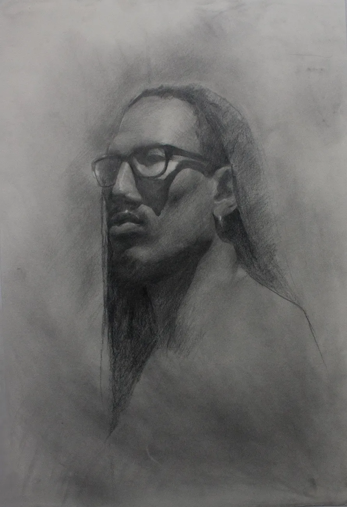
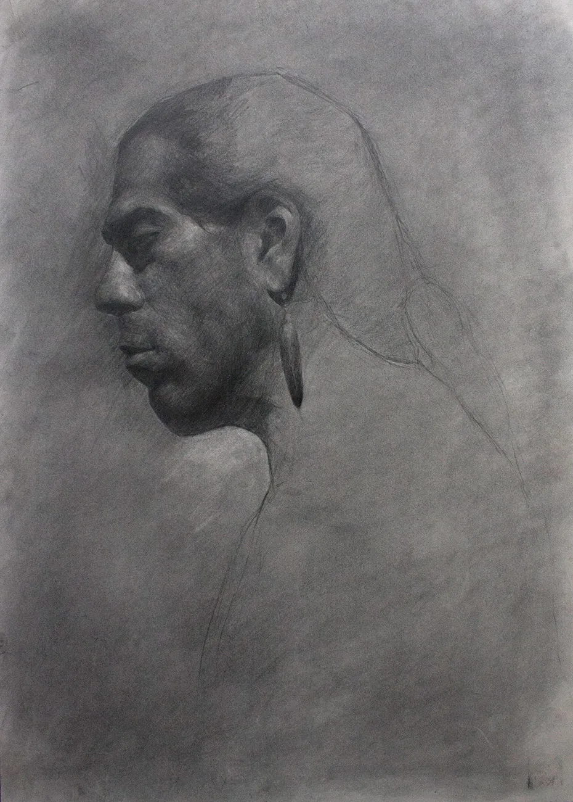
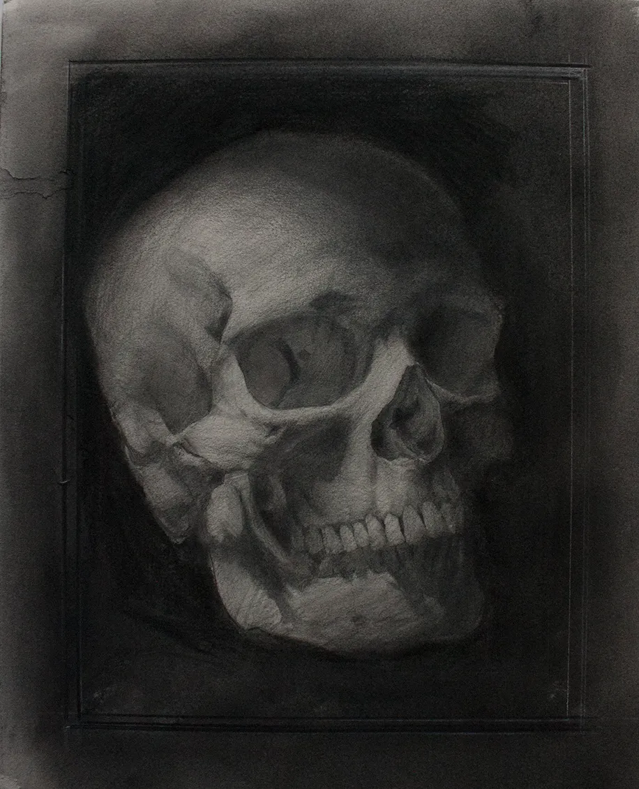
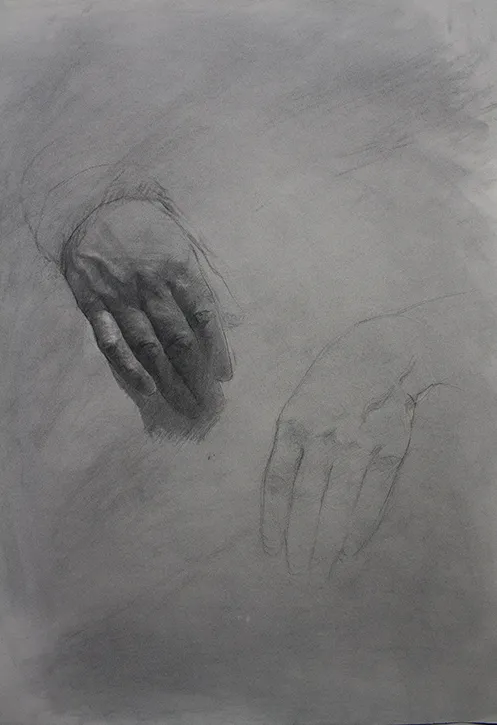
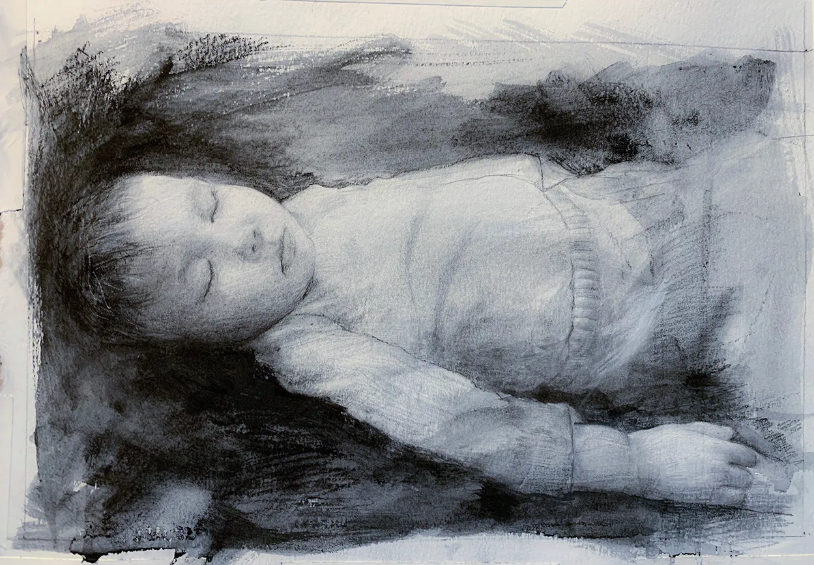
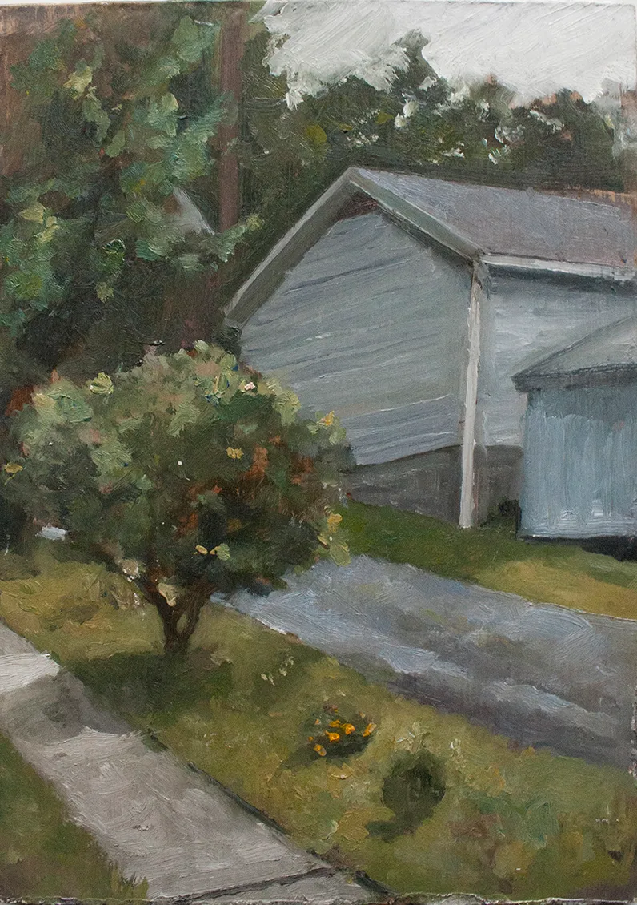
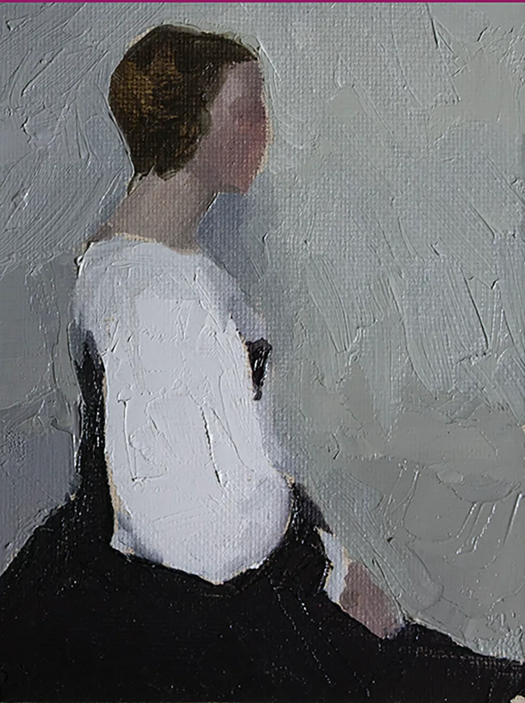
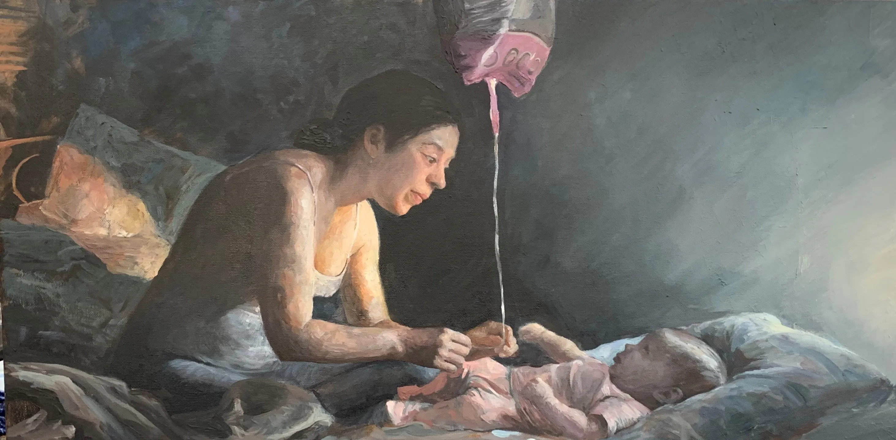
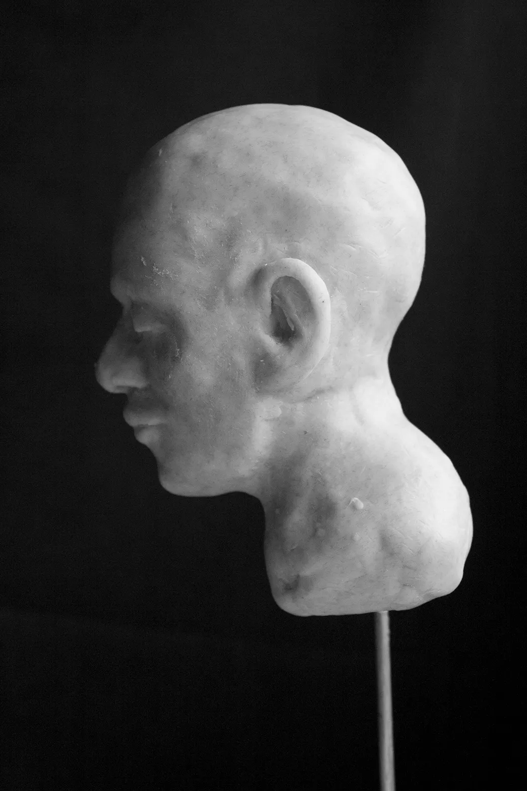

Graphite drawing, oil painting, and clay sculpture — classical training at the Art Students League of New York that forms the foundation of all my design work.
From 2011 to 2015 I studied drawing, painting, and sculpture at the Art Students League of New York — working from live models and still life setups under classical instruction. That observational discipline carries into every design decision I make. These are select works from that period and since.

Graphite and charcoal work from life — still life studies, portraits, and figure drawing. The emphasis is on accurate observation: proportion, value structure, and the patience to render what you actually see rather than what you think you know.





Oil paintings from life and from reference — plein air landscapes, figure studies, and color work. The focus is on color mixing, edge quality, and capturing light in a way that feels immediate rather than overworked.



Clay portrait busts modeled from life at the Art Students League. Working in three dimensions builds a spatial understanding of form that directly informs how I think about physical spaces, packaging structures, and environmental design.

